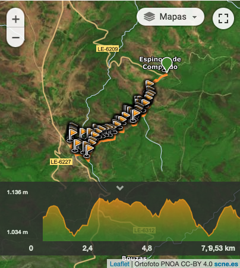
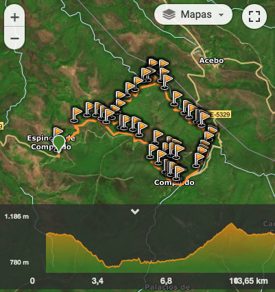
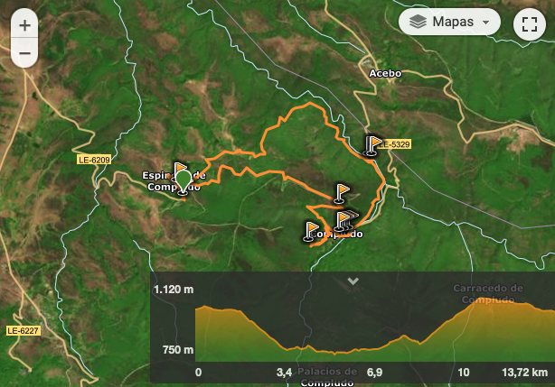
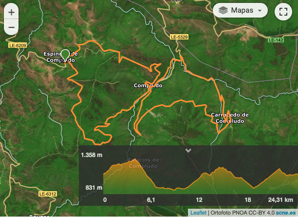

|
Ruta |
Descripción |
Kilometros |
|

|
Espinoso de Compludo - San Cristóbal de Valdueza - Espinoso de
Compludo
|
La ruta está señalizada al principio, en el aparcamiento que hay
antes de llegar a Espinoso de Compludo a partir de ahí ya no hay
más señales por lo que puede ser de gran utilidad descargar el
track por si acaso surgen dudas.
|
9,53 kilómetros |
|

|
Espinoso de Compludo-Molinos de Espinoso-Herrería de
Compludo-Espinoso de Compludo
|
SALIDA DESDE EL APARCAMIENTO QUE HAY ANTES DE LLEGAR A ESPINOSO DE
COMPLUDO DESDE DONDE SEGUIMOS LA CARRETERA PARA CRUZAR EL PUEBLO Y
COGER UNA PISTA QUE NOS LLEVA DIRECTAMENTE HASTA LOS MOLINOS
|
13,65 kilómetros |
|

|
Sendero de la Herrería de Compludo
|
Esta ruta de senderismo circular transcurre por el Valle de Compludo. Uno de los seis pueblos que formaban parte del antiguo Valle de la Abadía de Compludo es Espinoso, localidad que se asienta sobre uno de los cerros que salpican el valle proporcionando unas vistas impresionantes.
|
13,72 kilómetros |
|

|
Ruta del botillo 2013
|
Preciosa ruta organizada por los amigos de rutas del bierzo, saliendo desde Espinoso de Compludo, con unas subidas elegantes y unas bajadas de enmarcar, unas vistas espectaculares, una zona que no conocíamos y que nos ha dejado un muy buen sabor de boca. Buena mañana entre un buen numero de amigos, buen royo y para finalizar un Botillo "pal" pecho,las castañas,los chupitos de Molina......Etc
|
24,31 kilómetros |